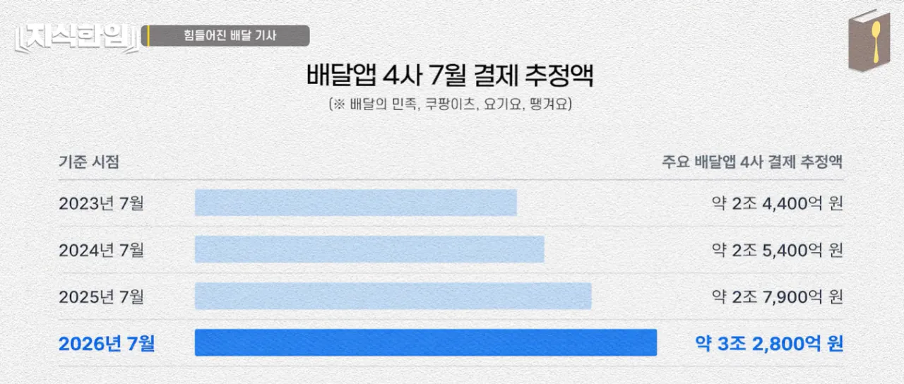
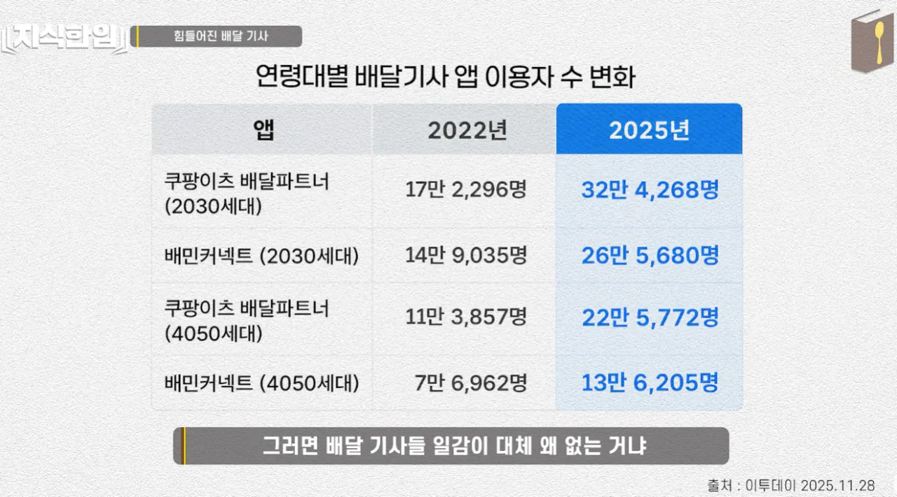
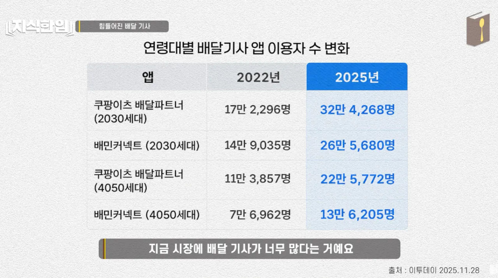

요즘 콜이 말랐다는 배달기사분들
그래서 요즘 마운자로 때문에 전체적인 배달 건수가 줄어서
그런 영향 때문이 아니냐 했고 그 주장이 뭔가 일리가 있어 보였는데

사실은 전혀 아니었음
여전히 배달 플랫폼은 잘나가고 있었고
'26년 7월 배달 플랫폼 결제액'이 역대 최고치를 찍음

그러면 대체 배달 기사들 일감이 왜 없는 거냐
그 이유는 의외로 단순했음

그냥 배달원 기사 자체가 ㅈㄴ 많아졌음
엄청난 취업난 + 외노자 유입 등등 다양한 변수로 3년만에 배달원 숫자가 2배나 늘음
극심한 취업난....
본업의 저임금으로 인한 부업러들 증가 + 자영업자들 폐업하고 그냥 배달기사 전직 등등
내수가 박살나서 배달기사 공급이 폭증한 상황
덕분에 월 700씩 벌어간다, 이런것도 싹 다 옛말이 되버렸고 요즘 14시간 일하고 남는 수익 10만원 막 그런다고 함
고점저점이론은 여전하다
배달1천 vs9급
그때 9급비하하더니